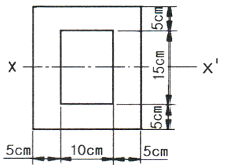
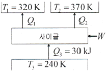
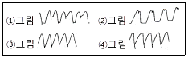
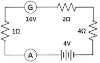

자동차정비기사 (2012-08-26 기출문제)
1과목: 일반기계공학
1. 공압 모터의 일반적인 장점에 관한 설명으로 틀린 것은?
- 폭발성이 없다.
- 속도조절이 자유롭다.
- 역전 시 충격발생이 적다.
- 공기의 압축성 때문에 제어성이 좋고, 배출음이 적다.
(정답률: 56%)

2. 벨트구동에서 미끄럼을 없애기 위하여 접촉면에 치형을 붙여 맞물림에 의하여 전동하도록 한 벨트는?
- 링크벨트
- 조합벨트
- 레이스벨트
- 타이밍벨트
(정답률: 76%)
3. 볼 베어링에서 베어링 하중을 1/2배로 하면 수명은 몇 배로 되는가?
- 1/8
- 8
- 16
- 24
(정답률: 50%)
4. 테르밋용접의 테르밋이란 무엇과 무엇의 혼합물인가?
- 붕사와 붕산의 분말
- 탄소와 규소의 분말
- 알루미늄과 납의 분말
- 알루미늄과 산화철의 분말
(정답률: 76%)
5. 공구강의 끝부분에 날을 만든 것으로 평면이나 원통면의 마무리 다듬질용 수공구인 것은?
- 스크레이퍼
- 분할 다이스
- 스크루 드라이버
- 컴비네이션 플라이어
(정답률: 79%)
6. 코일스프링에서 스프링 소재의 지름만을 1/2배로 하여 다시 만들면 동일 축 하중에 의하여 소재 내에 발생하는 최대전단응력은 몇 배가 되는가? (단, 왈(Whal)의 수정계수(K)는 1로 한다.)
- 1/4
- 4
- 8
- 1/8
(정답률: 57%)
7. 길이 2ɭ의 양단 지지형 단판스프링의 중앙에 2W의 집중하중이 작용할 때 중앙부 최대 처짐량(δ)은? (단, 스프링의 세로탄성계수는 E, 단면폭은 b, 높이는 h이다.)
- δ = (2Wɭ2)/(Ebh3)
- δ = (4Wɭ3)/(Ebh3)
- δ = (24Wɭ2)/(Ebh3)
- δ = (48Wɭ3)/(Ebh3)
(정답률: 61%)
8. 두 축이 직각으로 만나면 맞물리는 두 기어의 잇수가 같은 베벨 기어는?
- 스퍼 기어
- 스파이럴 기어
- 크라운 기어
- 마이터 기어
(정답률: 59%)
9. 비틀림 응력은 원형단면의 어느 곳에서 가장 크게 발생하는가?
- 중립축
- 축의 중심
- 원주 가장자리
- 중심과 원주 가장자리와의 중간점
(정답률: 74%)
10. 체결용 기계요소인 코터에 대한 설명으로 틀린 것은?
- 코터의 자립조건에서 마찰각을 ρ, 기울기를 α라 할 때에 한쪽 기울기의 경우는 α≦2ρ이어야 한다.
- 코터의 기울기는 한쪽 기울기와 양쪽 기울기가 있다.
- 코터이음에서 코터는 주로 비틀림 모멘트를 받는다.
- 코터는 로드와 소켓을 연결하는 기계요소이다.
(정답률: 57%)
11. 소성가공에서 소재를 고온으로 가열하여 앤빌 위에 놓고 해머로 타격을 가하거나, 2개의 다이(die) 사이에 소재를 넣고 압력을 가하여 필요한 형상의 제품을 만드는 것은?
- 단조
- 압연
- 인발
- 주조
(정답률: 76%)
12. 회전 펌프에 대한 일반적인 특징으로 틀린 것은?
- 가격이 싸다.
- 소형이며 중량이 가볍다.
- 고속회전에 적합하다.
- 구조가 복잡하다.
(정답률: 64%)
13. 구상흑연 주철에 관한 설명으로 틀린 것은?
- 인장강도가 50~70kgf/mm2 정도인 것도 있다.
- 차량용 부품이나 내마모용으로 사용한다.
- 한국산업표준 KS D 4302에 규정하고 있다.
- 단조가 가능한 주철이다.
(정답률: 73%)
14. 드릴로 뚫은 구멍의 중심위치에 맞게 다듬질 절삭하거나 구멍을 넓혀서 정확한 치수로 절삭하는 공작기계는?
- 보링 머신
- 호빙 머신
- 플레이너
- 세이퍼
(정답률: 69%)
15. 주철에 함유된 원소 중에서 가장 유해한 원소이며, 흑연화의 방해, 유동성 저하, 재질 경화 등의 영향을 끼치는 것은?
- 망간(Mn)
- 규소(Si)
- 탄소(C)
- 황(S)
(정답률: 76%)
16. 길이 100㎜인 축 끝 저널이 300rpm으로 회전할 때 최대 베어링 하중은 약 몇 N인가? (단, 발열계수 pv=0.2N/㎣·m/s이다.)
- 636.9N
- 955.4N
- 1273.2N
- 15923.6N
(정답률: 50%)
17. 펌프의 회전수가 1700rpm으로 유량 10m3/min을 송출할 때 전양정이 70m인 펌프의 회전차 바깥지름이 20m이었다. 이것과 상사이고 유량이 5m3/min, 전양정이 6m인 펌프를 만들 경우 회전차의 회전수는 약 몇 rpm으로 운전하면 적당한가?
- 173
- 190
- 346
- 381
(정답률: 23%)
18. 그림과 같은 내측이 비어 있는 직사각형 단면보의 단면중심 X-X′ 축에 대한 단면 2차 모멘트는 약 몇 ㎝인가? (단, 직사각형 외측 폭은 20㎝, 외측 높이는 25㎝이고, 내측 폭은 10㎝, 내측 높이는 15㎝이다.)

- 9317.5
- 18645
- 23229
- 45458
(정답률: 36%)
19. 다이캐스팅용 알루미늄 합금의 요구 성질 중 틀린 것은?
- 응고 수축에 대한 용탕 보급성이 좋을 것
- 금형에 잘 부착되어야 할 것
- 열간 취성이 적을 것
- 유동성이 좋을 것
(정답률: 74%)
20. 용접 경계부에 생기는 흠으로 용접전류가 너무 높거나 용접봉의 운봉속도가 빠를 때 일어나는 것은?
- 용입 불량
- 스패터
- 언더컷
- 오버랩
(정답률: 69%)
2과목: 기계열역학
21. 보일러 입구의 압력이 9800kN/m2이고, 응축기의 압력이 4900N/m2일 때 펌프 일은 약 몇 kJ/kg인가? (단, 물의 비체적은 0.001m3/kg이다.)
- -9.79
- -15.17
- -87.25
- -180.52
(정답률: 56%)
22. 피스턴-실린더 장치 내에 있는 공기가 0.3m3에서 0.1m3으로 압축되었다. 압축되는 동안 압력과 체적 사이에 P=aV-2의 관계가 성립하며, 계수 a＝6kPa·m2이다. 이 과정 동안 공기가 한 일은 얼마인가?
- -53.3kJ
- -1.1kJ
- 253kJ
- -40kJ
(정답률: 51%)
23. 어떤 유체의 밀도가 741kg/m3이다. 이 유체의 비체적은 약 몇 m3/kg인가?
- 0.78×10-3
- 1.35×10-3
- 2.35×10-3
- 2.98×10-3
(정답률: 60%)
24. 1kg의 기체가 압력 50kPa, 체적 2.5m3의 상태에서 압력 1.2MPa, 체적 0.2m3의 상태로 변하였다. 엔탈피의 변화량은 약 몇 kJ인가? (단, 내부에너지의 증가 U2-U1=0이다.)
- 306
- 206
- 155
- 115
(정답률: 35%)
25. 주위의 온도가 27℃일 때, -73℃에서 1kJ의 냉동효과를 얻으려 한다. 냉동 사이클을 구동하는데 필요한 최소일은 얼마인가?
- 2kJ
- 1.5kJ
- 1kJ
- 0.5kJ
(정답률: 38%)
26. 열교환기의 1차측에서 100kPa의 공기가 50℃로 들어가서 30℃로 나온다. 공기의 질량 유량은 0.1kg/s이고, 정압비열은 1kJ/kg·K로 가정한다. 2차측에서 물은 10℃로 들어가서 20℃로 나온다. 물의 정압비열은 4kJ/kg·K로 가정한다. 물의 질량유량은?
- 0.0⑤kg/s
- 0.01kg/s
- 0.⑤kg/s
- 0.10kg/s
(정답률: 44%)
27. 다음 냉동 사이클의 에너지 전달량으로 적절한 것은?

- Q1=20kJ, Q2=20kJ, W=20kJ
- Q1=20kJ, Q2=30kJ, W=20kJ
- Q1=20kJ, Q2=20kJ, W=10kJ
- Q1=20kJ, Q2=15kJ, W=5kJ
(정답률: 66%)
28. 실린더 지름이 7.5㎝이고, 피스톤 행정이 10㎝인 압축기의 지압선도로부터 구한 평균 유효압력이 200kPa일 때, 한 사이클당 압축일은 약 몇 J인가?
- 12.4
- 22.4
- 88.4
- 128.4
(정답률: 60%)
29. 공기를 300K에서 800K로 가열하면서 압력은 500kPa에서 400kPa로 떨어뜨린다. 단위 질량당 엔트로피 변화량은 약 얼마인가? (단, 비열은 일정하다고 가정하며, 300K에서 공기비열 Cp=1.004kJ/kg·K이다.)
- 0.15kJ/kg·K
- 1.5kJ/kg·K
- 1.⑤kJ/kg·K
- 0.1⑤kJ/kg·K
(정답률: 53%)
30. 냉동용량이 35kW인 어느 냉동기의 성능계수가 4.8이라면 이 냉동기를 작동하는데 필요한 동력은?
- 약 9.2kW
- 약 8.3kW
- 약 7.3kW
- 약 6.5kW
(정답률: 61%)
31. 이상적인 냉동 사이클의 기본 사이클은?
- 브레이튼 사이클
- 사바테 사이클
- 오토 사이클
- 역카르노 사이클
(정답률: 50%)
32. 밀폐계에서 기체의 압력이 500kPa로 일정하게 유지되면서 체적이 0.2m3에서 0.7m3로 팽창하였다. 이 과정 동안에 내부에너지의 증가가 60kJ이였다면 계(系)가 한 일은 얼마인가?
- 450kJ
- 350kJ
- 250kJ
- 150kJ
(정답률: 62%)
33. 다음 중 이상기체의 정적비열(Cv)과 정압비열(Cp)에 관한 관계식으로 옳은 것은? (단, R은 기체상수이다.)
- Cv－Cp ＝ 0
- Cv＋Cp ＝ R
- Cp－Cv ＝ R
- Cv－Cp ＝ R
(정답률: 56%)
34. 체적이 150m3인 방 안에 질량이 200kg이고 온도가 20℃인 공기(이상기체상수＝ 0.287kJ/kg·K)가 들어 있을 때 이 공기의 압력은 약 몇 kPa인가?
- 112
- 124
- 162
- 184
(정답률: 46%)
35. 상온의 실내에 있는 수은기압계의 수은주가 730㎜ 높이 있다면, 이때 대기압은 얼마인가? (단, 25℃ 기준, 수은 밀도＝13534kg/m3)
- 9.68kPa
- 96.8kPa
- 4.34kPa
- 43.4kPa
(정답률: 51%)
36. 증기압축기 냉동 사이클용 냉매의 성질로 적당하지 않은 것은?
- 증발잠열이 크다.
- 임계온도가 상온보다 충분히 높다.
- 증발압력이 대기압 이상이다.
- 응고온도가 상온 이상이다.
(정답률: 58%)
37. 대류 열전달계수와 관계가 없는 것은?
- 유체의 열전도율
- 유체의 속도
- 고체의 형상
- 고체의 열전도율
(정답률: 65%)
38. 다음 중 엔트로피에 대한 설명으로 맞는 것은?
- 엔트로피의 생성항은 열전달의 방향에 따라 양수 또는 음수일 수 있다.
- 비가역성이 존재하면 동일한 압력 하에 동일한 체적의 변화를 갖는 가역과정에 비해 시스템이 외부에 하는 일이 증가한다.
- 열역학 과정에서 시스템과 주위를 포함한 전체에 대한 순 엔트로피는 절대 감소하지 않는다.
- 엔트로피는 가역과정에 대해서 경로함수이다.
(정답률: 23%)
39. 반 데르 발스(van der Waals)의 상태 방정식은 (P＋ɑ/v2)(v-b)=RT 식에서 ɑ/v2, b는 각각 무엇을 고려하는 상수인가?
- 분자간의 작용 인력, 분자간의 거리
- 분자간의 작용 인력, 분자 자체의 부피
- 분자 자체의 중량, 분자간의 거리
- 분자 자체의 중량, 분자 자체의 부피
(정답률: 63%)
40. 최고온도 1300K와 최저온도 300K 사이에서 작동하는 공기표준 Brayton 사이클의 열효율은 약 얼마인가? (단, 압력비는 9, 공기의 비열비는 1.4이다.)
- 30%
- 36%
- 42%
- 47%
(정답률: 31%)
3과목: 자동차기관
41. 기관에 사용되는 윤활유의 열화원인으로 가장 거리가 먼 것은?
- 윤활유 자신의 산화에 의한 열화
- 윤활유 압송압력에 의한 열화
- 외부에서 이물질 혼입에 의한 열화
- 첨가제의 소모에 의한 열화
(정답률: 66%)
42. 실린더 라이너와 피스톤의 재질 중에 주철제와 알루미늄 합금제의 특징으로 틀린 것은?
- 알루미늄 합금제는 주철제에 비하여 원가가 비싸다.
- 알루미늄 합금 라이너에는 알루미늄 합금 피스톤을 사용하여 경량화하고 성능을 높인다.
- 알루미늄 합금제 라이너는 열팽창이 크므로 이를 고려하여 제작한다.
- 알루미늄 합금 피스톤을 사용하면 실린더 라이너는 주철제가 많이 쓰여 진다.
(정답률: 58%)
43. 디젤기관에서 연소 시 영향을 미치는 요소와 가장 거리가 먼 것은?
- 옥탄가
- 흡기온도
- 기관의 회전속도
- 압축비
(정답률: 78%)
44. LPG 차량에서 시동을 끄기 위해서 LPG 스위치 OFF 시 작동하는 밸브는?
- 액상, 기상 솔레노이드 밸브
- 긴급 차단 솔레노이드 밸브
- 2차 록 솔레노이드 밸브
- 슬로우 컷 솔레노이드 밸브
(정답률: 67%)
45. 표면 경화법을 이용하여 처리하지 않은 부품은?
- 브레이크 드럼
- 피스톤 핀
- 종감속 기어
- 크랭크 축
(정답률: 78%)
46. 전자제어 가솔린 엔진의 점화장치에서 점화시기 제어에 영향을 주는 센서가 아닌 것은?
- 수온 센서
- 차압 센서
- 스로틀 포지션 센서
- 노킹 센서
(정답률: 74%)
47. 연료 압력조절기를 작동상태에서 점검하는 방법으로 맞는 것은?
- 엔진이 공전상태에서 압력조절기의 진공호스를 빼면 연료압력은 약간 상승해야 정상이 다.
- 엔진이 공전상태에서 압력조절기의 진공호스를 빼면 연료압력은 약간 하강해야 정상이 다.
- 연료라인에 연료압력계를 설치하고 급가속 했을 때 연료압력은 절대로 변동하지 않아야 정상이다.
- 연료라인에 연료압력계를 설치하고 공전상태에서 압력조절기에 진공을 더욱 크게 가하면 엔진회전수는 상승해야 정상이다.
(정답률: 80%)
48. 가솔린을 연소실에 직접 분사하는 자동차 기관의 열역학적 기본 사이클은?
- 정압 사이클
- 정적 사이클
- 랭킨 사이클
- 복합 사이클
(정답률: 72%)
49. 디젤기관의 커먼레일(co㎜on-rail) 방식 분사 장치의 특징 중 틀린 것은?
- 파일럿 분사(pilot injection), 즉 예분사가 가능하다.
- 운전상태의 변화에 따라 분사 압력을 제어할 수 있다.
- 분사 압력이 최대 800bar 정도로 높기 때문에 유해 배기가스를 줄일 수 있다.
- ECU가 분사 개시점, 분사량, 분사 종료점 등을 결정하기 때문에 출력이 향상된다.
(정답률: 71%)
50. 전자제어 연료분사 장치에서 인젝터의 기본 연료량에 해당하는 구동 시간을 계산하는데 다음 중 해당되지 않는 것은?
- 보정 계수
- 냉각수 온도
- 무효 분사 시간
- 흡입 공기의 중량
(정답률: 19%)
51. 전자제어 가솔린기관의 분사장치에서 분사밸브의 듀티(duty)율로 연료 분사량을 제어하기 위한 전제 조건이 아닌 것은?
- 분사밸브의 분공 단면적이 동일해야 한다.
- 분공을 통과하는 고압연료에는 미세공기가 포함되어야 한다.
- 분사차압(또는 유효분사압력)이 일정해야 한다.
- 분사밸브의 전자기적 특성(예 : 히스테리시스)이 동일해야 한다.
(정답률: 74%)
52. 연료펌프 내부에서 발생하는 연료압력의 맥동을 흡수하기 위하여 부착한 것은?
- 연료 압력 조절기(Fuel pressure regulator)
- 체크밸브(Check valve)
- 릴리프 밸브(Relief valve)
- 사일렌서(Silencer)
(정답률: 70%)
53. 비열비 k=1.4의 공기를 동작 유체로 하는 디젤기관에서 압축비 ε=1.4, 단절비 σ=2일 때, 이론 열효율은?(오류 신고가 접수된 문제입니다. 반드시 정답과 해설을 확인하시기 바랍니다.)
- 약 38%
- 약 48%
- 약 60.4%
- 약 77.4%
(정답률: 55%)
54. 전자제어 가솔린엔진의 노크센서에 대한 설명으로 맞는 것은?
- 노크 신호가 검출되면, 엔진은 점화시기를 진각 시킨다.
- 노크센서를 조립할 때에는 반드시 스프링 와셔를 장착해서 조립해야 한다.
- 노크센서를 조립할 때에는 가능한 한 실린더 블록에 강하게 밀착하기 위해서 최대한 조여 주어야 한다.
- 노크센서를 조립할 때에는 그리스나 밀봉제 등을 도포하지 않으며 규정된 토크로 조립 되어야 한다.
(정답률: 78%)
55. 기술자 A가 “캠센서가 캠축의 타이밍을 늦추고 진각 한다.”라고 말하고, 기술자 B는 “캠센서가 점화시간을 늦추고 진각 한다.”라고 말한다. 누가 옳은가?
- A가 옳다.
- B가 옳다.
- A와 B 모두 옳다.
- A와 B 모두 틀리다.
(정답률: 78%)
56. 가변 흡입 장치의 구성요소가 아닌 것은?
- 배기제어밸브
- 서보 모터
- 흡기제어밸브(가변 솔레노이드 밸브)
- 흡기제어밸브 위치센서
(정답률: 73%)
57. 피스톤 지름 70㎜, 피스톤 평균속도 15m/s인 가솔린 기관에 흡기밸브 유로의 면적이 12cm2일 경우 흡입가스의 평균 유속(m/s)은 약 얼마인가?
- 48
- 58
- 7.0
- 8.4
(정답률: 27%)
58. 기관성능에 영향을 미치는 인자에 속하지 않는 것은?
- 축마력
- 흡입 공기량
- 기관 회전수
- 연소실의 형상
(정답률: 76%)
59. 유해 배출가스 정화 장치의 종류가 아닌 것은?
- 크랭크 케이스 배출 가스 제어장치
- 배기가스의 압력을 이용한 과급기
- 배기가스 재순환장치(EGR)
- 배기가스 후처리 삼원촉매장치
(정답률: 67%)
60. 디젤 노크 방지제 종류가 아닌 것은?
- 초산아밀
- 초산에틸
- 아초산아밀
- 노말햅탄
(정답률: 74%)
4과목: 자동차새시
61. 타이어 휠이 어떤 모양으로 차체에 정착되어 있는가를 종합적으로 점검하기 위해 차륜 정렬 상태의 정상유무를 판단하기 위한 시험기는?
- 토 게이지
- 캠버 게이지
- 휠 얼라인먼트 시험기
- 휠 밸런스 시험기
(정답률: 84%)
62. 다음 중 기어 변속이 잘 되지 않는 원인으로 틀린 것은?
- 클러치 페달의 자유 유격이 작다.
- 싱크로나이저 링의 소착
- 클러치 오일의 누유
- 싱크로나이저 링의 마모가 많다.
(정답률: 78%)
63. 자동차를 주행하면서 선회할 때 조향각도를 일정하게 유지하여도 선회 반지름이 작아지는 현상은?
- 오버 스티어링
- 언더 스티어링
- 리버스 스티어링
- 토크 스티어링
(정답률: 79%)
64. 급제동 시에 앞바퀴보다 뒷바퀴가 먼저 고착되어 차량이 돌아가는(spin) 것을 방지하기 위해 뒤쪽의 제동압력을 전자적으로 제어하기 위한 장치는?
- 전자제어 브레이크 압력 분배 장치(EBD)
- 전자식 브레이크 보조 장치(BAS)
- 전자제어 구동력 조절 장치(TCS)
- 차량 자세 제어 장치(VDC, ESP)
(정답률: 73%)
65. 자동차용 수동변속기 클러치의 동력 전달효율에 대하여 틀린 것은?
- 클러치에서 나온 동력에 비례한다.
- 클러치로 들어간 동력에 반비례한다.
- 엔진의 회전수에 비례한다.
- 클러치의 출력 회전수에 비례한다.
(정답률: 69%)
66. 수동변속기 차량에서 기어 변속 시 기어의 클래시(clash)를 방지하기 위하여 구성된 것은?
- 카운터 기어
- 싱크로나이저 기구
- 오조작 방지기구
- 인터록 볼
(정답률: 71%)
67. 후크식 자재이음을 설치하는 방법으로 옳은 것은?
- 추진축 양단의 2개 요크는 동일 평면상에 있어야 한다.
- 추진축 상의 2개 요크는 45°를 유지하여야 한다.
- 입력축과 추진축 간의 경사각은 추진축과 출력축 간의 경사각과 달라야 한다.
- 입력축과 추진축 간의 경사각은 추진축과 출력축 간의 경사각과 90° 차이가 있어야 한다.
(정답률: 60%)
68. 공기식 제동장치에서 압력조정기의 작용에 대한 설명으로 틀린 것은?
- 공기탱크 속의 압력이 규정 값이 되면 압력조정기에서 공기를 배출하므로 압력을 조정한 다.
- 공기탱크 속의 압력이 규정 값이 되면 언로더 밸브를 작용시켜 압축작용이 증가된다.
- 압력조정기는 공기압축기에서 공기탱크에 보내는 압력을 조정한다.
- 앞뒤 바퀴로 가는 압축공기의 압력을 조정한다.
(정답률: 62%)
69. 자동변속기차량에서 킥다운(kick-down)에 대한 설명으로 옳은 것은?
- 구동력을 크게 하기 위해 강제로 다운 시프트하는 것이다.
- 구동력을 크게 하기 위해 오버 드라이브 장치를 가동하는 것이다.
- 속도 증가에 따른 연료의 저감을 위하여 연료를 차단하는 기능이다.
- 스로틀 포지션 센서의 고장 시 기관 회전수로 대체하는 기능이다.
(정답률: 86%)
70. 휠(wheel)에 대한 일반적인 특징으로 틀린 것은?
- 자동차가 기울었을 때 발생하는 옆방향의 힘 등에 견디어야 한다.
- 휠의 회전 밸런스(balance)에도 관계가 있다.
- 충분한 강도가 있으며 무거워야 한다.
- 휠의 구조는 타이어를 장착하는 림과 림을 지지하는 디스크로 구성되어 있다.
(정답률: 82%)
71. 전자제어 현가장치에서 컴퓨터에 입력요소가 아닌 것은?
- 차체 G 센서
- 조향각 센서
- 차속 센서
- 댐핑 센서
(정답률: 65%)
72. 승용차 타이어의 규격이 'P2⑤/60R 15 96H'일 경우 타이어의 단면 높이는?
- 2⑤㎜
- 123㎜
- 60㎜
- 15㎜
(정답률: 63%)
73. 종감속 기어 중 하이포이드 기어의 장점이 아닌 것은?
- 추진축의 높이를 낮출 수 있어 자동차의 중심을 낮게 할 수 있다.
- 스파이럴 베벨기어에 비해 구동 피니언을 크게 할 수 있어 강도가 증대된다.
- 스파이럴 베벨기어에 비해 제작이 쉽다.
- 기어의 물림률이 커 회전이 정숙하다.
(정답률: 71%)
74. 전자제어 조향장치에서 저속으로 주행할 때 운전자의 조향 휠 조작력은?
- 작아진다.
- 커진다.
- 조작력과는 상관없다.
- 회전방향으로 가벼워진다.
(정답률: 69%)
75. ABS 장치의 휠 스피드 센서 점검은 어떤 장비를 이용하는 것이 가장 바람직한가?
- 디지털 멀티미터
- 아날로그 멀티미터
- 오실로스코프
- 전압계
(정답률: 80%)
76. 제동장치 고장 중 앞·뒤 브레이크 쪽의 휠 부근에서 타는 냄새가 날 때 고장 내용으로 거리가 먼 것은?
- 리턴스프링의 장력이 약하다.
- 브레이크 페달의 자유간극이 많다.
- 마스터 실린더 내의 오일 리턴구멍이 막혔다.
- 마스터 실린더의 푸시로드 길이가 길다.
(정답률: 48%)
77. 제동 안전장치 중에서 후륜 쪽의 유압제어 개시점을 적재하중에 따라 변하도록 한 것은?
- 텐덤형 마스터 실린더
- 로드 센싱 프로포셔닝 밸브
- 이너셔 밸브
- 릴리프 밸브
(정답률: 84%)
78. 자동변속기에 사용하는 오버드라이브 유성기어의 구성품은?
- 선 기어, 유성 기어, 유성 기어 캐리어, 링기어
- 선 기어, 유성 기어, 유성 기어 캐리어, 유성기어 축
- 선 기어, 유성 기어, 스퍼 기어
- 선 기어, 유성 기어, 프리 휠 링
(정답률: 85%)
79. 차량의 속도가 50km/h, 바퀴 속도가 20km/h일 때의 브레이크 슬립률은?
- 20%
- 5%
- 60%
- 100%
(정답률: 60%)
80. 현가장치에서 통형 쇼크업소버의 특징으로 틀린 것은?
- 링크와 로드를 사용하지 않고 직접 설치할 수 있다.
- 마찰손실이 적고 실린더 내에 발생되는 유압이 적다.
- 실린더가 이중으로 되어 방열효과가 크다.
- 피스톤 행정이 길다.
(정답률: 60%)
5과목: 자동차전기
81. 납산 축전지의 충전화학 반응식을 바르게 표시한 것은?
- PbO2＋2H2SO4＋Pb2 → PbSO4＋2H2O＋PbSO4
- PbSO4＋2H2O＋PbSO4 → PbO2＋2H2SO4＋Pb
- PbO＋2H2SO2＋Pb → PbSO2＋2H2O＋PbSO4
- PbSO2＋2H2O＋PbSO4 → PbO2＋2H2SO2＋Pb
(정답률: 60%)
82. 오실로스코프를 사용하여 교류 발전기 출력파형을 통해 다이오드와 스테이터 코일의 이상 유무 판정으로 틀린 것은?

- ①항은 다이오드 1개 단락
- ②항은 다이오드 1개 단선
- ③항은 스테이터 코일 1상 단선
- ④항은 스테이터 코일 1상 단락
(정답률: 63%)
83. 그림에서 G의 발전전압은 16V일 때 전류계 A에 흐르는 전류는?

- 1A
- 2A
- 3A
- 4A
(정답률: 58%)
84. 오일레벨 경고등 회로에서 타이밍 회로가 사용되는 이유는?
- 주행 중에 오일팬에 있는 오일의 출렁거림으로 인한 잘못된 점등을 방지하기 위해
- 오일이 없을 때의 경과 시간을 측정하여 베어링의 손실을 측정하기 위해
- 낮은 양을 보유하고 있다는 것을 센서가 감지하는 정확한 시간에 경고등을 점등하기 위해
- 오일의 온도가 낮아 액면 계측의 정확도가 떨어지는 것을 방지하기 위해
(정답률: 81%)
85. 자동차용 냉방장치에서 건조기의 기능이 아닌 것은?
- 액체냉매를 기체상태로 건조시킨다.
- 열적부하에 따라 증발기로 보내는 액체냉매를 저장한다.
- 냉매 중에 함유된 수분과 이물질을 제거한다.
- 건조기 출구 냉매의 온도나 압력이 비정상적으로 높을 때, 냉매의 압력을 조정하는 기능을 한다.
(정답률: 49%)
86. 전조등의 상·하 진폭에 대한 안전기준으로 적합한 것은?
- 상향진폭은 중심높이의 3/10 이내, 하향진폭은 절대불가
- 상향진폭은 중심높이의 1/4 이내, 하향진폭은 절대불가
- 상향진폭은 10㎝, 하향진폭은 설치높이의 3/10 이내
- 상향진폭은 절대불가, 하향진폭은 설치높이의 3/10 이내
(정답률: 69%)
87. 운행자동차 전조등의 광도 및 광축의 측정조건에 대한 설명 중 적당하지 않는 것은?
- 적절히 예비운전 되어 있는 공차상태의 자동차에 운전자 1인이 승차한 상태에서 측정한 다.
- 자동차의 원동기는 공회전 상태로 측정한다.
- 자동차의 축전지는 충전한 상태로 한다.
- 4등식 전조등인 경우에는 4등의 빛을 차단하지 않은 상태로 측정한다.
(정답률: 63%)
88. 2개의 코일 간의 상호 인덕턴스가 1.5H일 때 한 쪽 코일의 전류가 0.01초 동안에 5A 에서 1A로 변화하면 다른 쪽 코일에는 얼마의 기전력이 유도되는가?
- 100V
- 200V
- 400V
- 600V
(정답률: 34%)
89. DLI(distributorless ignition) 점화방식의 구성부품으로 적절치 못한 것은?
- ECU
- 파워 트랜지스터
- 점화코일
- 시그널로터
(정답률: 65%)
90. 4기통 가솔린 기관에서 동시(그룹) 점화방식의 DLI 장치에 대한 설명으로 틀린 것은?
- 두 실린더에 병렬로 연결되어 동시 점화되므로 연소실 내에서의 불꽃 세기는 같다.
- 배기행정을 하는 실린더에 점화되는 불꽃은 압축하는 실린더의 불꽃에 비해 약하다.
- 압축행정을 하는 실린더와 배기행정을 하는 실린더에 동시 점화된다.
- 점화코일이 2개이므로 제어하는 파워 트랜지스터도 2개로 구성되어 있다.
(정답률: 55%)
91. 축전지의 자기 방전에 대한 설명으로 틀린 것은?
- 자기 방전량은 전해액의 온도가 높을수록 커진다.
- 자기 방전량은 전해액의 비중이 낮을수록 커진다.
- 자기 방전량은 전해액 속의 불순물이 많을수록 커진다.
- 자기 방전은 전해액 중에 존재하는 불순금속이 국부전지를 형성하여 발생한다.
(정답률: 64%)
92. 기동 전동기는 정상 회전하나 엔진이 크랭킹 되지 않을 때 고장 원인으로 가장 적합한 것은?
- 인히비터 스위치 불량
- 배선의 단선
- 피니언 기어의 절손
- 퓨즈블 링크의 절손
(정답률: 57%)
93. 무배전기식 점화장치의 드웰 시간(dwell time)에 관련된 설명으로 옳은 것은?
- 구간이 길면 점화시기가 빨라진다.
- 점화시기 조정은 드웰 시간을 조정하여 행한다.
- 이 구간은 ECU가 파워 트랜지스터의 베이스 단자에 전원을 공급하는 시간이다.
- 이 구간은 파워 트랜지스터의 C 단자에서 E 단자로 흐르는 전류가 차단되고, 점화플러그에서 불꽃이 튄다.
(정답률: 71%)
94. 에어백 장치에서 조수석 에어백(PAB)과 사이드 에어백(SAB)에 관한 내용으로 거리가 먼 것은?
- 승객 유무 감지 센서(PPD)에 의해 조수석 에어백이 불필요하게 전개되지 않도록 한다.
- 안전띠를 착용하지 않았을 경우 사이드 에어백은 전개하지 않는다.
- 승객 유무 감지 센서(PPD)의 저항변화에 따라 승객 탑승 여부를 감지한다.
- 그레이 존(gray zone)은 상황에 따라 에어백이 전개 또는 비 전개되는 구간을 말한다.
(정답률: 59%)
95. 방향지시등의 작동에 대한 내용으로 거리가 먼 것은?
- 방향지시등의 신호가 운전석에서 확인할 수 있다.
- 방향지시등 회로에 이상이 있는 경우에 운전석에서 확인할 수 있다.
- 방향지시등의 점멸주기는 변화가 적어야 한다.
- 방향지시등의 한쪽 전구가 단선이 있어도 다른 전구는 정상적으로 점멸된다.
(정답률: 51%)
96. 점화장치에 요구되는 조건이 아닌 것은?
- 잡음 및 전파 방해가 적을 것
- 불꽃 에너지가 클 것
- 발생전압이 높고 여유전압이 낮을 것
- 점화시기 제어가 확실할 것
(정답률: 72%)
97. 시동 후에도 충전 경고등이 점등되는 이유로 옳은 것은?
- 스테이터 코일에서 발생하는 전압이 높다.
- 로터코일에서 발생하는 전압이 높다.
- 발전기 S 단자의 퓨즈가 단선되었다.
- 배터리에서 공급된 전압이 발전기 측에서 발전된 전압보다 높다.
(정답률: 43%)
98. 자동차의 에어컨 구성 부품 중에서 고온, 고압의 기체상태의 냉매를 액체 상태의 냉매로 만드는 역할을 하는 것은?
- 압축기(compressor)
- 응축기(condenser)
- 팽창밸브(expansion valve)
- 증발기(evaporator)
(정답률: 65%)
99. 발전기의 출력을 증가시키기 위해 적용해야 할 사항이 아닌 것은?
- 자속라인의 맴돌이 전류가 증가
- 자속라인을 통과하는 고정자 권선수의 증가
- 자속라인을 통과하는 권선의 상대속도 증가
- 자속라인의 자기장 강화
(정답률: 67%)
100. 커넥터 분리 상태의 연속성 접지회로를 점검하는 방법으로 맞는 것은?
- 저항계로 점검한다.
- 헤르츠계로 점검한다.
- 압력계로 점검한다.
- 듀티계로 점검한다.
(정답률: 55%)
공기의 압축성 때문에 제어성이 좋고, 배출음이 적다는 것은 공기를 이용하기 때문에 유체 모터에 비해 더 빠른 반응속도와 정확한 제어가 가능하며, 배출되는 소음이 적다는 장점이 있습니다.